Hace dos años que el Inter no ocupaba el primer puesto en el calcio , un largo y duro periodo para su propietario y máximo accionista , Massimo Moratti , el empresario petrolero más rico de Italia , que lleva casi una década desembolsando dinero para colocar al club en lo más alto.
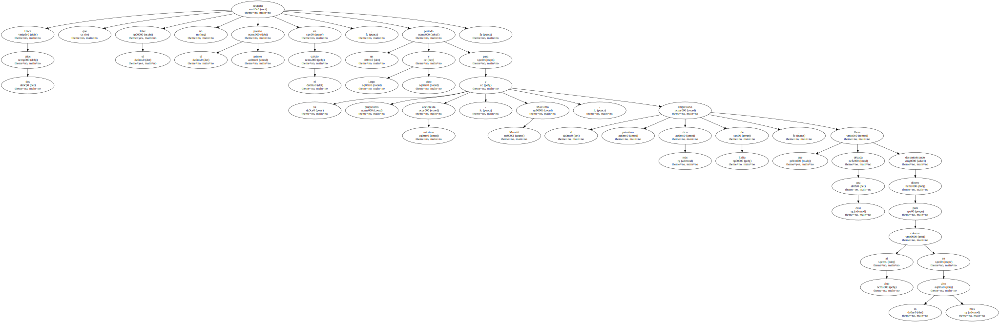Un solo éxito - - la Copa de la UEFA del 98 - - e innumerables fracasos , con un eterno baile de jugadores y técnicos , han marcado la gestión de Moratti que ahora , con su noveno proyecto , parece estar al fin en el buen camino , método del argentino Héctor Cúper : trabajo , fortuna y silencio.
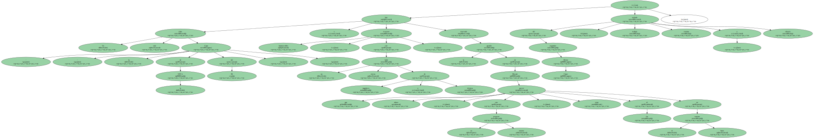Con la misma humildad , prudencia y obsesión por la disciplina con las que triunfó en el Mallorca y en el Valencia , el efecto Cúper también se ha hecho notar en Milán , con lo que ha aumentado el prestigio del técnico argentino.
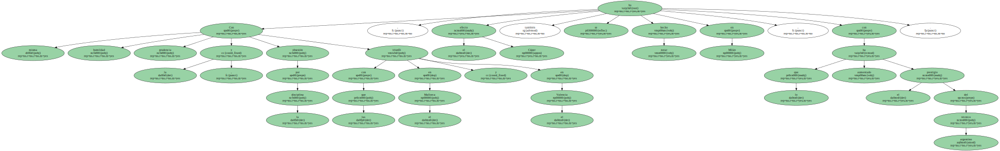En un vestuario convulsionado por los constantes cambios , Cúper ha obrado el milagro.
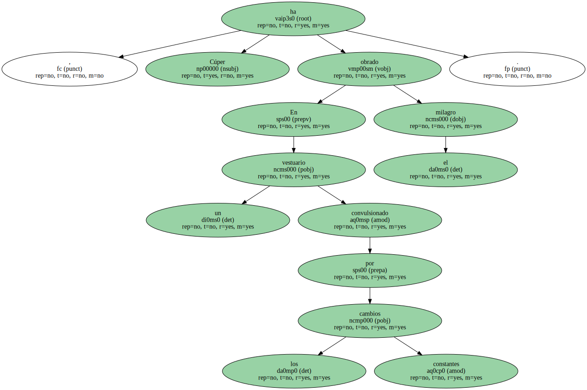Su labor la elogia incluso un jugador díscolo como pocos , Clarence Seedorf , que ha recobrado su mejor nivel : " Ganemos o perdamos , ahora tenemos un equipo con espíritu , con la mentalidad justa ".
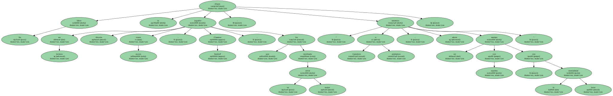Cuatro victorias y un empate en cinco jornadas , avalan la trayectoria del nuevo Inter.
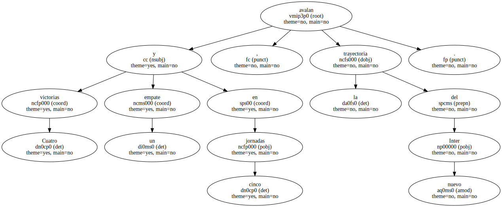Solitario y taciturno , Cúper no trata de convencer a nadie con lo que dice , pero sí con lo que hace el Inter en el campo.

Y nada de lo que hoy es el equipo neriazzurro tiene que ver con el pasado.
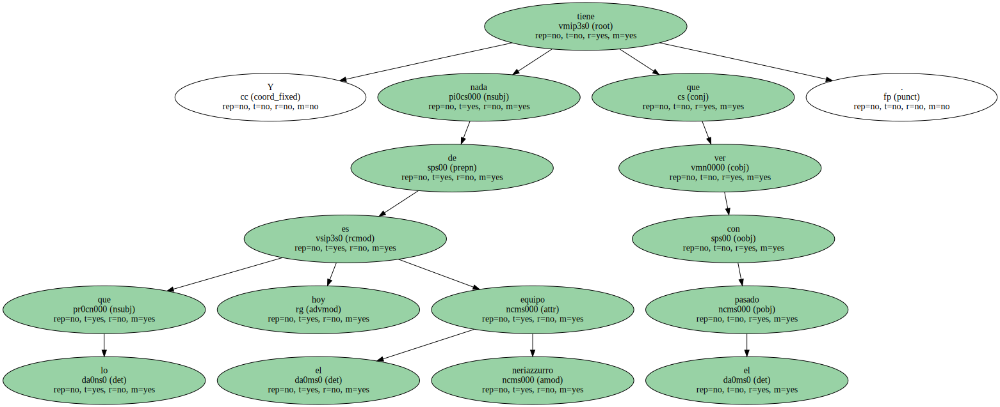Este Inter aparece con el perfil que exige Cúper : un equipo compacto , organizado tácticamente y unido en mentalidad y objetivos.

Lo más formidable de esta rápida transformación es que la eficacia del Inter ha llegado sin sus dos grandes estrellas , Ronaldo y Vieri , un ataque con el que sueñan los interistas y que han truncado las constantes lesiones.
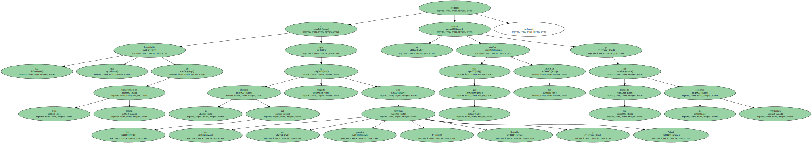En su lugar , Cúper se ha inventado una delantera sorprendente y eficaz.

La forman Kallon , jugador de Sierra Leona , y Ventola , un delantero forjado en la cantera del Inter que ha recuperado este año del Atalanta.
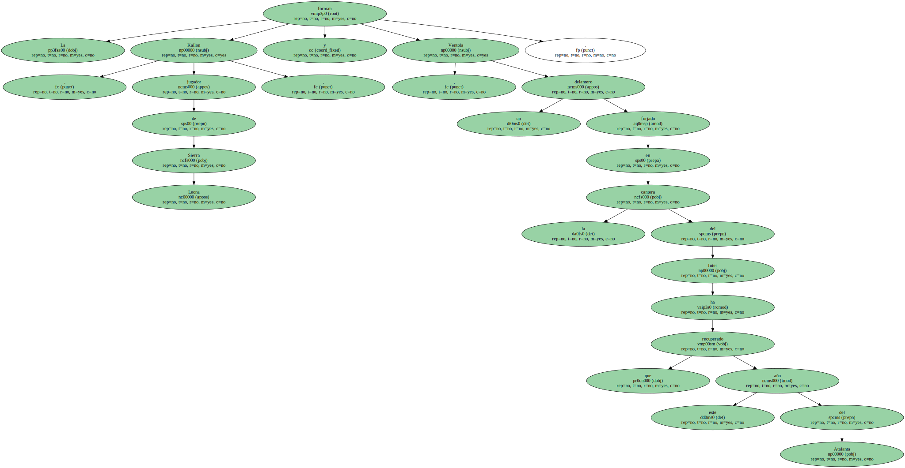Kallon , de 21 años , y Ventola , de 23 , son hoy el exponente de la renovación de Cúper y de la confianza que muestra un equipo que ha debido asimilar , otra vez , 17 nuevos fichajes , entre ellos el portugués Conceiçao ( Parma ) , los argentinos Guglielminpietro ( Milan ) y Vivas ( Arsenal ) , los turcos Emre y Okan ( Galatasaray ) , los italianos Toldo ( Fiorentina ) y Materazzi ( Perugia ) , el brasileño Adriano ( Flamengo ) o el propio Kallon ( Vicenza ).
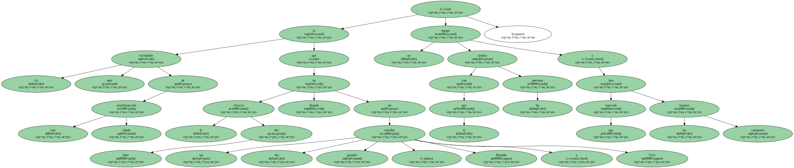Después de los fracasos con Lippi y Tardelli , la sensatez que ha traído Cúper supone ahora la gran esperanza para un club que no gana el scudetto desde 1989.
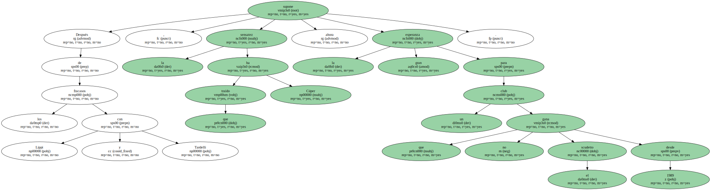